Artist
Mina Mohseni
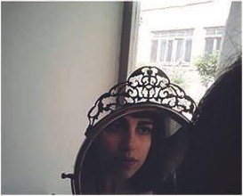
- Born1984
- FromShiraz, Iran
- Works10
- Dated2016
- CatalogueContemporary Iranian Art, Tehran 2017
StatementAbout the work
"And the waters prevailed exceedingly upon the earth; and all the high hills that were under the whole heaven were covered." —Genesis 7:19 (KJV)
The wheel that is supposed to spin, does not. The car that is supposed to take you there, cannot. What have we done, that no matter how hard we try, we just don't seem to make it in the end?
With strained motions and gestures, the human subjects of my works are more or less doing the same things. The acts of these faceless people is analogous to bitter humor: even in the face of this vicious circle, they seem to retain their spurious calm demeanor. It is as if it is all staged and preconceived, or perhaps the situation—that shows the failure to realize our ideals—is repeated so many times that they have gotten used to it. Everything that were supposed to bring us piece of mind, caused us to be more miserable in the end: once again, nature has taken us by surprise, leaving us with no choice but to run. It seems like no fate awaits us but to wander. In the meantime, some prefer to stay and defend their threadbare achievements, hoping to change the status quo with a heroic, but seemingly childish, resistance. Similar to Théodore Géricault's "The Raft of the Medusa," this work is not telling an epic tale, but a tragedy. Iniquity seems to be inevitable and mankind does not seem to accept their fate. The victimizers are victimized.
Works10 artworks

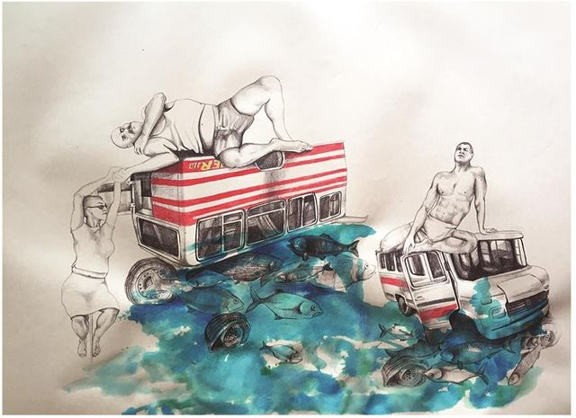

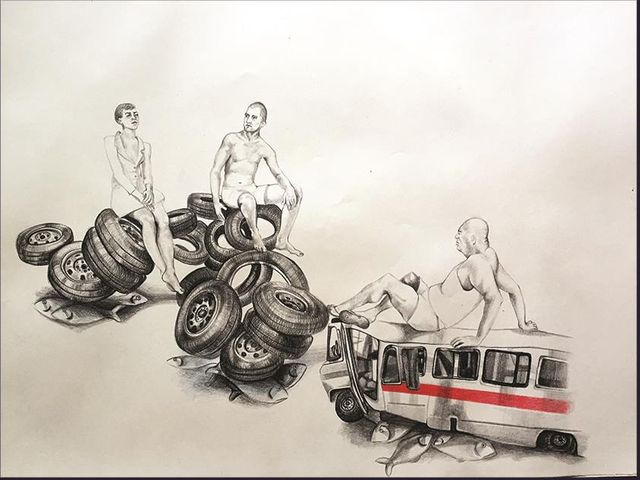

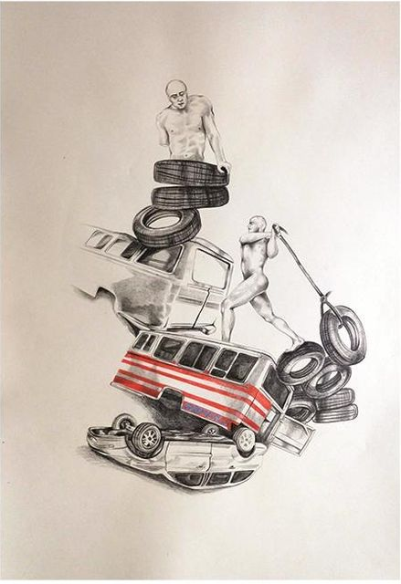

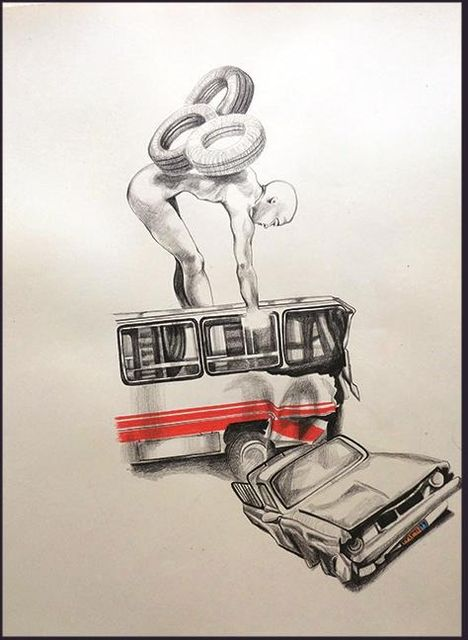

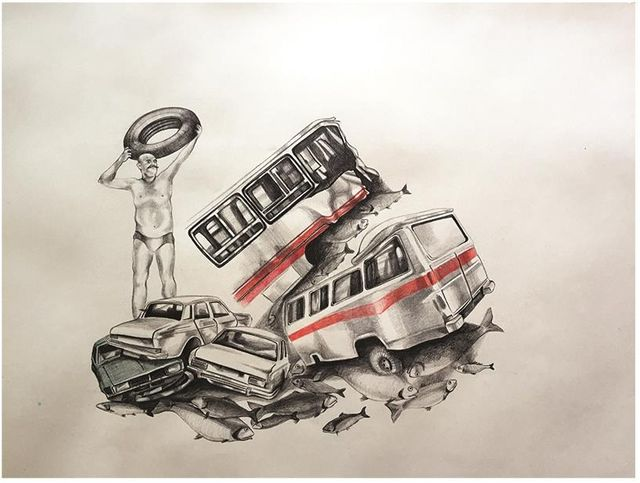

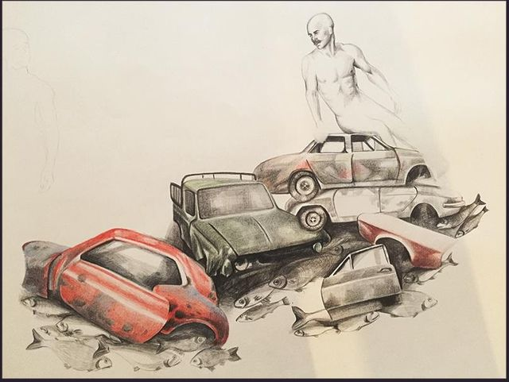

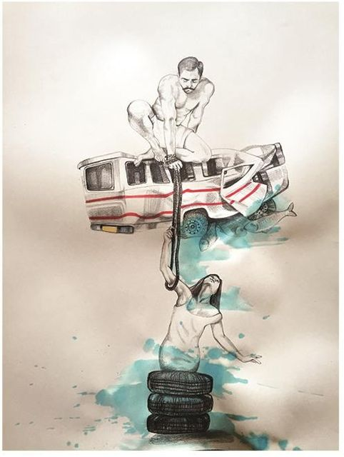

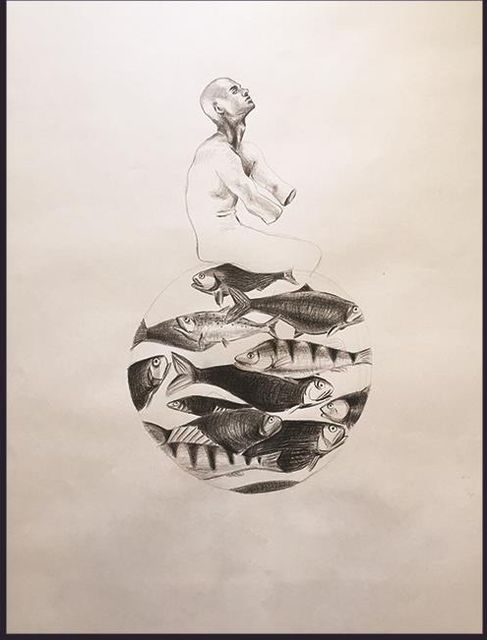

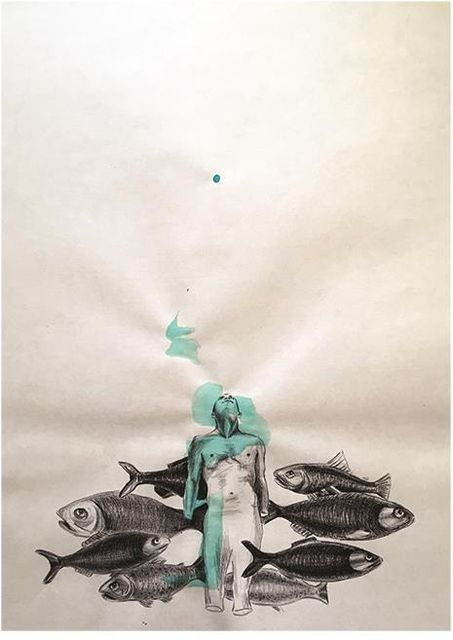

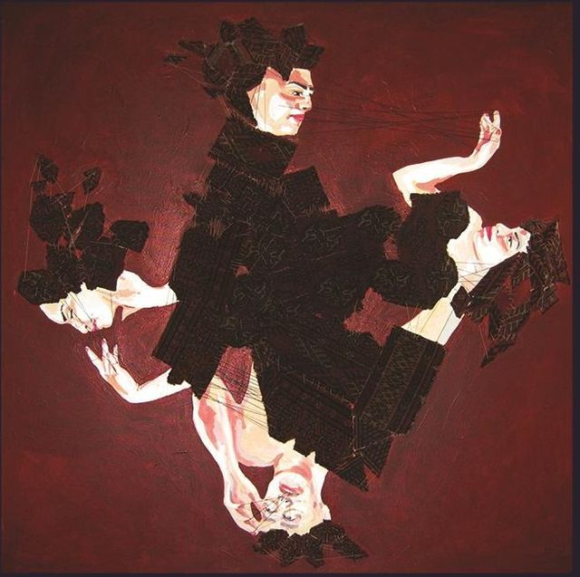
History of experienceBiography · education · exhibitions · awards
Education
- 2011M.A. of painting, Isfahan National Art University
- 2007B.A. of painting-Shiraz Soureh Art University
Membership
- since 2009Member of Iranian painters association
- since 2011Member of Iranian visual arts development association
- since 2012Lecturer of art at governmental &private collages in Iran
Solo exhibitions
- 2007Iranian Artist Forum|Tehran
Selected group exhibition
- 2016Fereshteh Bookcity Gallery|Tehran
- 2016Aaran Gallery-Pulp Narration-Curated by Nazila Nobashari|Tehran
- 2015Hormoz Island-Installation and land art-Hormoz cultural week|Hormoz Island
- 2015Mohsen Gallery-Spherol – Iran & Austria commiunication|Tehran
- 2014Iranian Artist Forum-Art for peace-(curated by Feridun Farbod)|Tehran
- 2013Shirin Gallen/-Merxout project(open source)-(curated by Amirhossein Bayani)|Tehran
- 2013Shirin Gallery- corrosion-curated by Aidin Xankeshipour|Tehran
- 2013Dastan's Basment-inversion- curated by Aidin Xankeshipour|Tehran
- 2013Workshop at Kauno art university|Kauna-Lithuania
- 2013workshop at Raudondvaris castle|Kauno-Lithuania
- 2013From Persia to Islamic country I klaipedos kulturu komunikaciju centras-klaipeda- lithuania
- 2012Mohsen Art Gallery|Tehran
- 2012Seyhoun Art Gallery-Inanimate life|Tehran
- 2012Seen Art Gallery|Tehran
- 2012State Capitol- Iranian Artists|California
- 2012Arte Gallery-Drawing for Drawing|Tehran
- 2010Iranian Artist Forum-selected of Iranian painters association members|Tehran
- 2010Mahemehr Gallery|Tehran
- 2010Bayat-Abdollah-charity exhibition(Curated by Simin Dehqani)|Kuwait
- 2009Homa Art Gallery-selected of young artists|Tehran
- 2009UN-Habitate —Humankind settlement & city (Curated by Janet Rady)|London
- 2008Homa Art Gallery-selected of young artists|Tehran
- 2008Shiraz Artist Forum-selected of shiraz painters|Shiraz
- 2007Hafriyat Karakoy(Curated by Amirali Qasemi)|Istanbul
- The theme of these works is a contemporary retelling of the Sisyphean state of the world. The works' structures and their subject-matters are to be percieved symbolically. I begin the process by drawing on paper: one of my main concerns in making art is to engage with the medium. I intend to augment the capacities and capabilities of the medium, or else to incorporate different materials into it. Some of the works are made of a number of curved surfaces, which are juxtaposed to make a single curved line The curved surfaces is an embodiment of the great cosmic wave and the cycle of time. I tried to give an architectural arrangement to my works to reflect the nature's imminent order: the viewer has to follow a course to see the work entirely. For citizens of Tehran, the issue of air pollution is something they have to live with every single day. Shoddy vehicles are harmful, but we have to use them anyway. I have used this Mercedes-Benz 0309 diesel minibus to represent all the transportation vehicles. For many years these were the only vehicles available, and so many of the boys and girls of my generation used to go to school by this minibus, which would break down day in and day out, causing us to arrive late at school.
Source: the Sobhan Gallery artist catalogue “Sobhan Gallery. C. Mina Mohseni.pdf”.